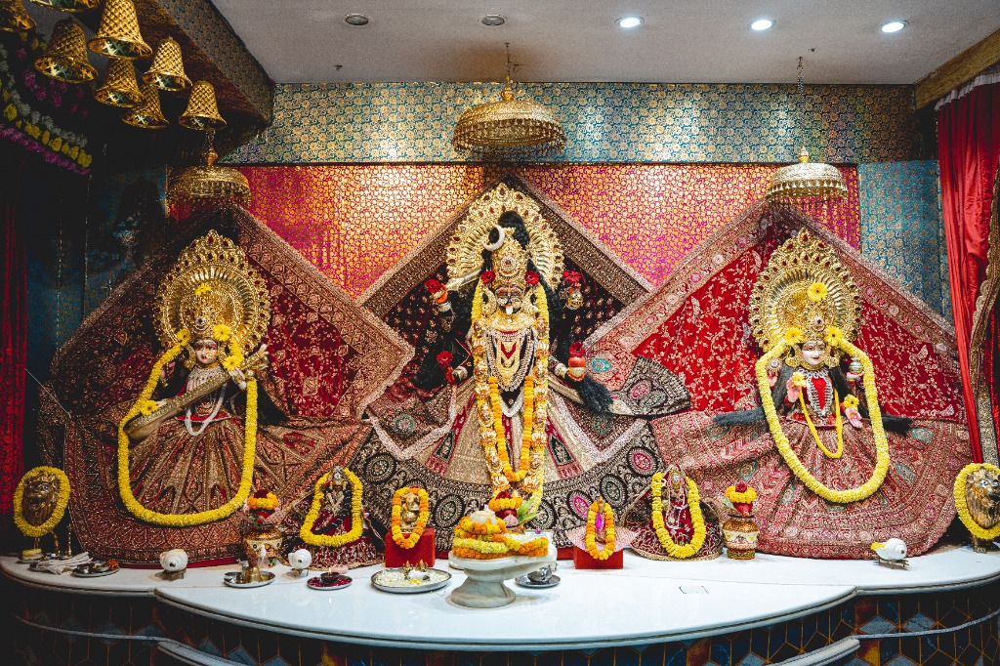
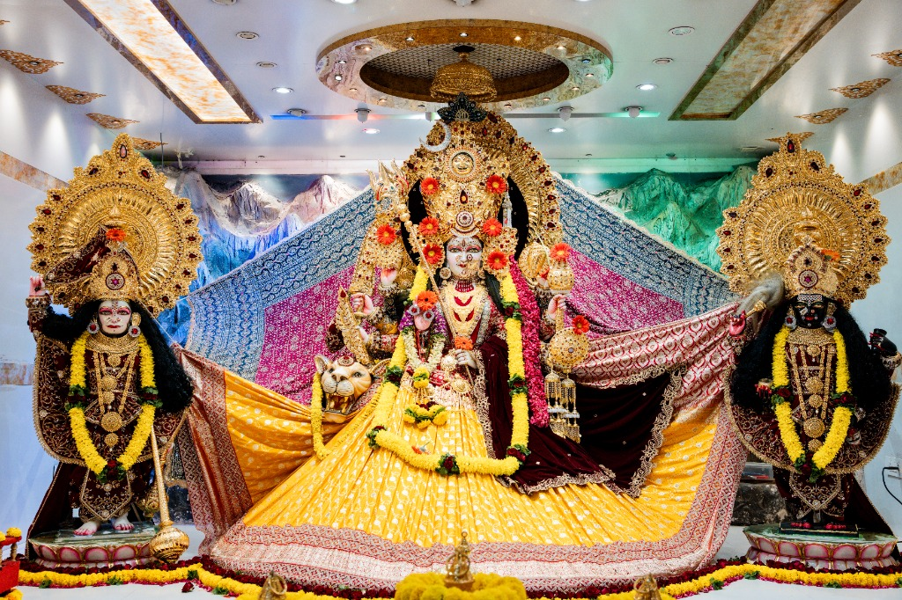
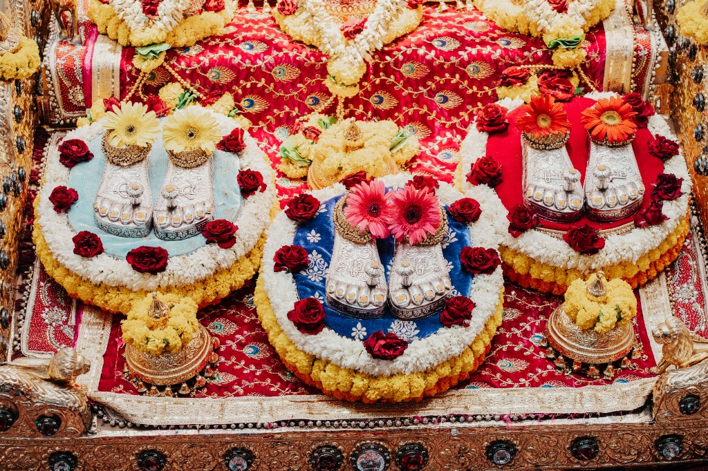

Adi Shakti Maa Vaishno Bhavtarni Mandir
"Welcome to the sacred abode of Maa Vaishno Bhavtarni, a place of faith, devotion, peace, and divine blessings. May Maa guide every step of your journey and fill your life with strength, hope, and positivity."
Live YouTube Darshan
Receive Maa Vaishno Bhavtarni's divine blessings and daily Aarti live on YouTube from wherever you are.
Daily Mandir Darshan Timings
Plan your pilgrimage according to the daily Darshan and Aarti hours of Maa's Darbar.
Morning Darshan
Mangala Darshan, Daily Pujas, and Morning Aarti at 7:30 AM.
Afternoon Break
Sanctum closed for Bhog offering and विश्राम (rest).
Evening Darshan
Deepotsav, Sandhya Aarti at 7:00 PM, and Shayan Darshan.

About Adi Shakti Maa Vaishno Bhavtarni Mandir
Situated in the sacred town of Titwala, Maharashtra, Adi Shakti Maa Vaishno Bhavtarni Mandir is a sanctified shrine dedicated to the Divine Mother. Devotees visit this sacred abode to seek Maa's eternal blessings, strength, and inner spiritual peace.
Inspired by the eternal power of Adi Shakti, the Mandir enshrines the holy Tridevi (Maa Mahakali, Maa Mahalakshmi, Maa Mahasaraswati) alongside the sacred Charan Paduka, uniting thousands of devotees through daily worship, Vedic rituals, and festival celebrations.
Divine Glimpses of Maa's Darbar
Glimpses of the sanctum sanctorum, golden shringar, and holy Charan Paduka.


Support Mandir Seva & Prasad Bhandara
Your generous contribution directly supports the daily worship, flower shringar, Prasad bhandara, and festival arrangements of Maa's Darbar. Every donation is an offering of faith and seva.
Quick UPI Offering
Visit the Mandir in Titwala
Located conveniently near Titwala Railway Station on the Central Railway route.
📍 Temple Address
Adi Shakti Maa Vaishno Bhavtarni Mandir, Titwala, Taluka Kalyan, District Thane, Maharashtra - 421605, India
Pilgrim Transport: Titwala is accessible from Mumbai CST / Thane via Central Railway suburban trains. Auto-rickshaws are readily available from Titwala railway station to the temple.